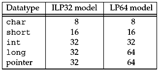

| [ Team LiB ] |
|
1.11 64-Bit ArchitecturesDuring the mid to late 1990s, the trend began toward 64-bit architectures and 64-bit software. One reason is for larger addressing within a process (i.e., 64-bit pointers), which can address large amounts of memory (more than 232 bytes). The common programming model for existing 32-bit Unix systems is called the ILP32 model, denoting that integers (I), long integers (L), and pointers (P) occupy 32 bits. The model that is becoming most prevalent for 64-bit Unix systems is called the LP64 model, meaning only long integers (L) and pointers (P) require 64 bits. Figure 1.17 compares these two models. Figure 1.17. Comparison of number of bits to hold various datatypes for the ILP32 and LP64 models. From a programming perspective, the LP64 model means we cannot assume that a pointer can be stored in an integer. We must also consider the effect of the LP64 model on existing APIs. ANSI C invented the size_t datatype, which is used, for example, as the argument to malloc (the number of bytes to allocate), and as the third argument to read and write (the number of bytes to read or write). On a 32-bit system, size_t is a 32-bit value, but on a 64-bit system, it must be a 64-bit value, to take advantage of the larger addressing model. This means a 64-bit system will probably contain a typedef of size_t to be an unsigned long. The networking API problem is that some drafts of POSIX.1g specified that function arguments containing the size of a socket address structures have the size_t datatype (e.g., the third argument to bind and connect). Some XTI structures also had members with a datatype of long (e.g., the t_info and t_opthdr structures). If these had been left as is, both would change from 32-bit values to 64-bit values when a Unix system changes from the ILP32 to the LP64 model. In both instances, there is no need for a 64-bit datatype: The length of a socket address structure is a few hundred bytes at most, and the use of long for the XTI structure members was a mistake. The solution is to use datatypes designed specifically to handle these scenarios. The sockets API uses the socklen_t datatype for lengths of socket address structures, and XTI uses the t_scalar_t and t_uscalar_t datatypes. The reason for not changing these values from 32 bits to 64 bits is to make it easier to provide binary compatibility on the new 64-bit systems for applications compiled under 32-bit systems. |
| [ Team LiB ] |
|